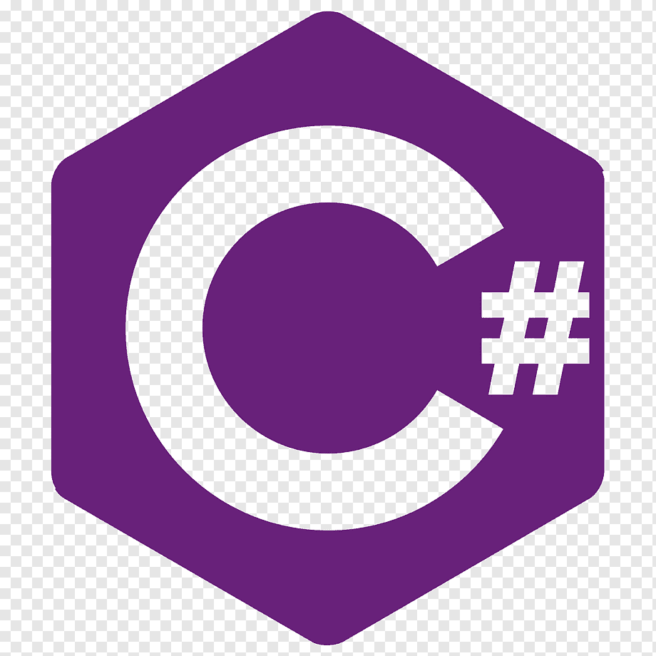
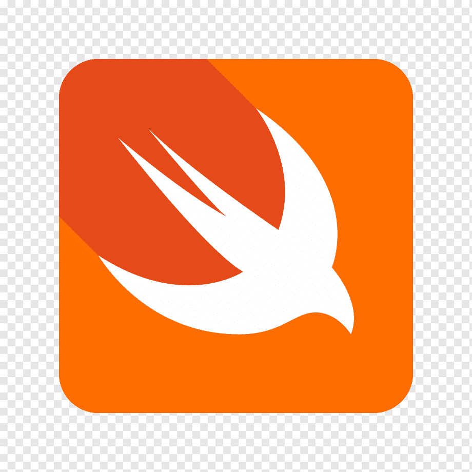

| Nombre |
Descripcion |
Imagen |
| java |
Java es un lenguaje de programación y una plataforma informática comercializada por primera vez en 1995 por Sun Microsystems. Hay muchas aplicaciones y sitios web que no funcionarán a menos que tenga Java instalado y funcionando |
 |
| C |
C es un lenguaje de programación de propósito general desarrollado por Dennis Ritchie entre 1969 y 1973 en los Laboratorios Bell, en el AT&T Bell Telephone Laboratories para desarrollar el sistema operativo UNIX. C es la base de muchos lenguajes de programación modernos, como C++, Java, C#, Objective-C, PHP, Python y Go. |
 |
| Python |
Python es un lenguaje de programación interpretado cuya filosofía hace hincapié en una sintaxis que favorezca un código legible. Se trata de un lenguaje de programación multiparadigma, ya que soporta orientación a objetos, programación imperativa y, en menor medida, programación funcional. |
 |
| C# |
C# es un lenguaje de programación multiparadigma desarrollado por Microsoft como parte de su plataforma .NET. Esencialmente es un sucesor de C y C++ que conserva la sintaxis de C y agrega características de seguridad, programación orientada a objetos y componentes. |
 |
| C++ |
C++ es un lenguaje de programación multiparadigma, diseñado para proporcionar un soporte de programación estructurada, orientada a objetos y genérica. Es un lenguaje compilado, por lo que se transforma en código máquina antes de ser ejecutado, y es considerado un lenguaje de programación de propósito general. |
 |
| Visual Basic .NET |
Visual Basic .NET es un lenguaje de programación orientado a objetos desarrollado por Microsoft como parte de su plataforma .NET. Es un lenguaje de programación de alto nivel, con un fuerte soporte para la programación orientada a objetos y la programación de componentes. |
|
| JavaScript |
JavaScript es un lenguaje de programación interpretado, dialecto del estándar ECMAScript. Se define como orientado a objetos, basado en prototipos, imperativo, débilmente tipado y dinámico. |
 |
| PHP |
PHP es un lenguaje de programación de uso general de código del lado del servidor originalmente diseñado para el desarrollo web de contenido dinámico. Fue uno de los primeros lenguajes de programación del lado del servidor que se podían incorporar directamente en el HTML. |
 |
| SWIFT |
Swift es un lenguaje de programación desarrollado por Apple Inc. para programar las aplicaciones para sus sistemas operativos iOS, iPadOS, macOS, watchOS y tvOS. Fue presentado en la WWDC 2014 y se lanzó oficialmente en septiembre de 2014 junto con Xcode 6. |
 |
| SQL |
SQL es un lenguaje de dominio específico utilizado en programación, diseñado para administrar y recuperar datos almacenados en un sistema de gestión de bases de datos relacional. |
 |
| Ruby |
Ruby es un lenguaje de programación interpretado, multiparadigma y de tipado dinámico. Fue diseñado y desarrollado en los años 1990 por Yukihiro Matsumoto en Japón. Su nombre proviene del preciado gema roja, el rubí. |
 |